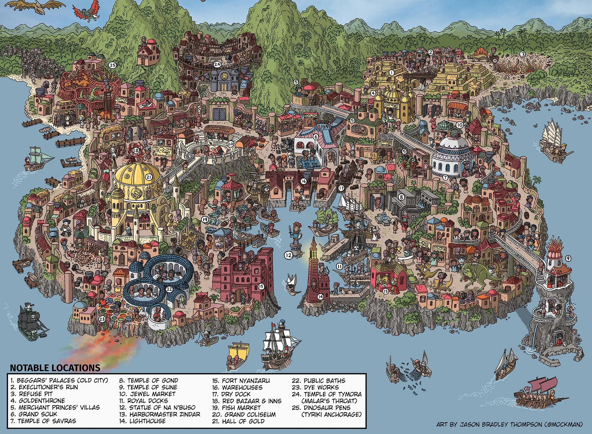

Tambores ecoam por Port Nyanzaru, a joia tropical de Chult. Multidões se acotovelam nas varandas coloridas, apostando suas últimas moedas enquanto os Príncipes Mercantes observam das alturas. Sob o sol escaldante, dinossauros pintados com padrões tribais rugem na linha de partida — o sinal é dado, e o caos toma as ruas.
